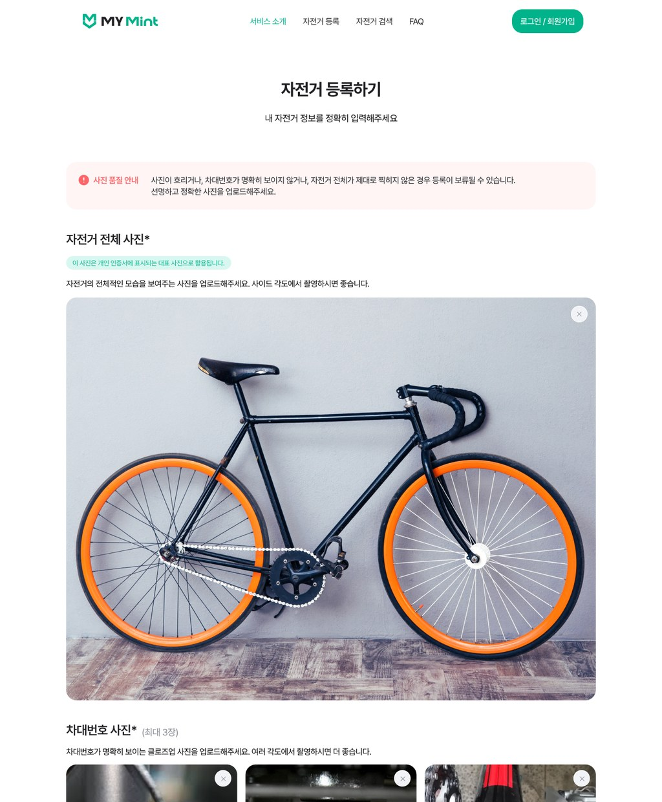
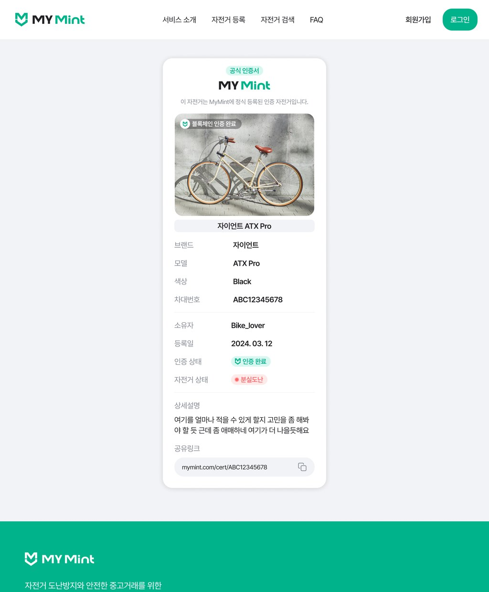
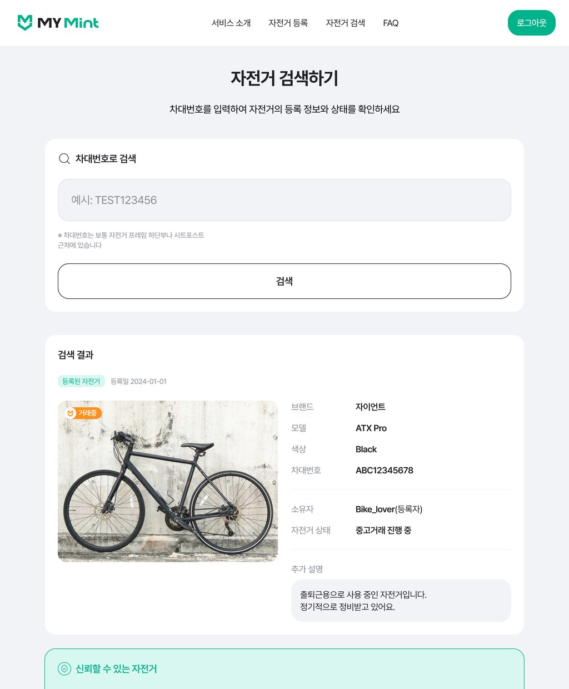
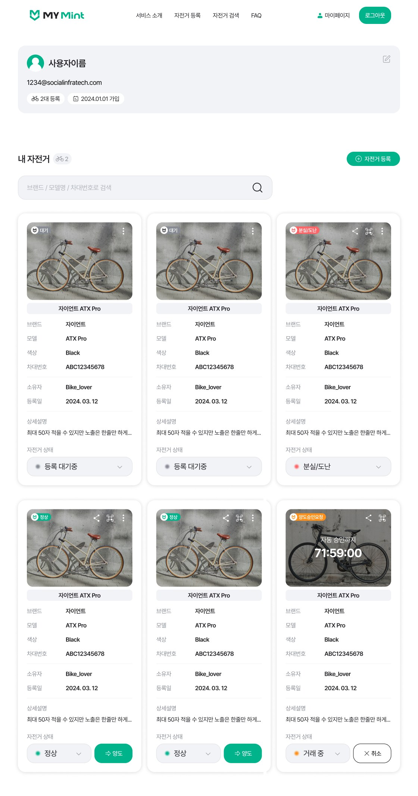
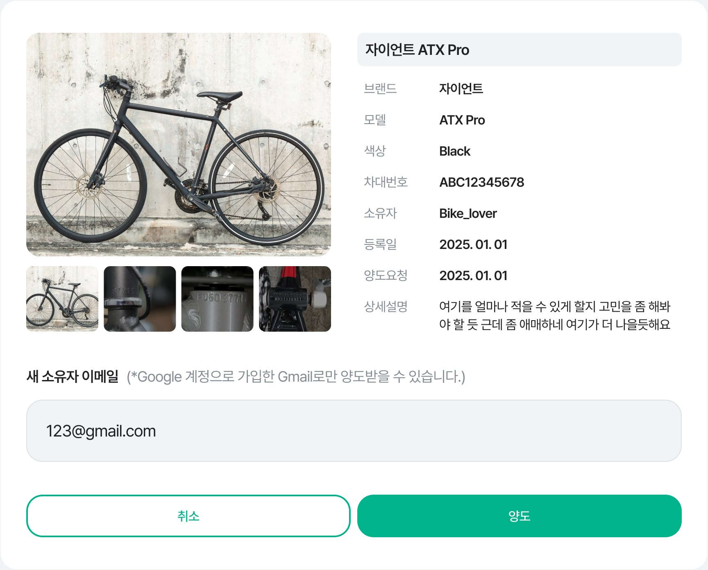
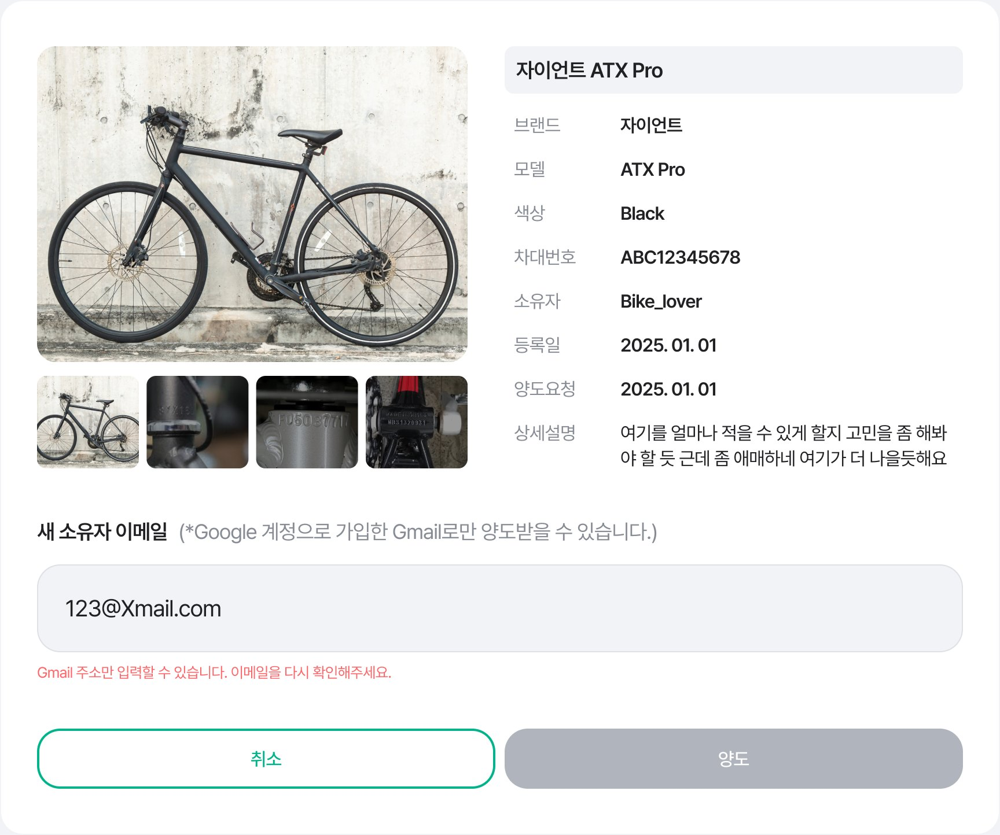
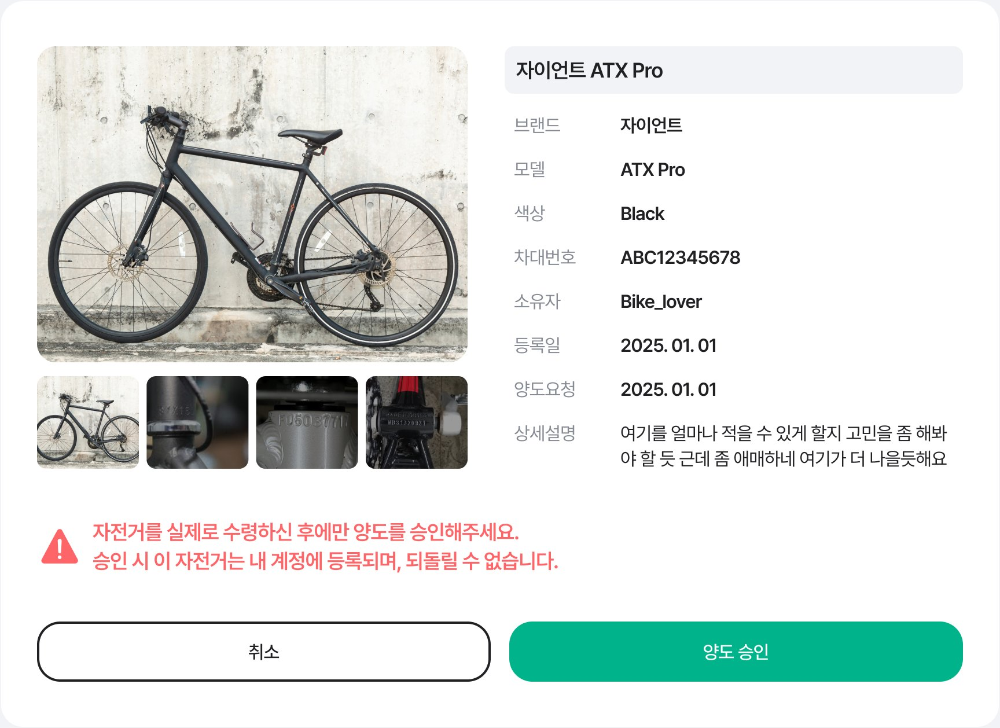
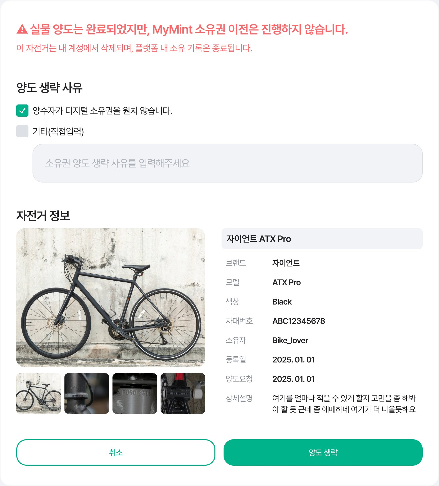

01
도난 · 분실 예방
자전거를 등록하는 것만으로 도난과 분실을 미리 억제합니다.
MyMint Product Design
Web UX/UI · Bike Ownership Platform
자전거 소유권을 디지털로 인증하고,
사고팔 때는 소유권까지 안전하게 넘겨 주는 플랫폼
01 — Overview
MyMint는 도난과 분실을 예방하고 안전한 거래를 돕는 자전거 등록 플랫폼입니다. 차대번호와 사진으로 자전거를 등록하면 디지털 인증서가 발급되고, 중고거래 때 이 인증서를 공유하거나 검색해 진짜 주인인지 확인할 수 있습니다.
01
자전거를 등록하는 것만으로 도난과 분실을 미리 억제합니다.
02
등록된 자전거는 소유 확인이 가능해 믿을 수 있는 거래가 됩니다.
03
도난 · 분실 시 주인을 확인하고 되찾을 가능성을 높입니다.
My Scope
서비스 전반의 기획은 다른 기획자가 맡았고, 저는 소유권 양도 프로세스의 기획과 서비스 전체의 화면 설계 · UI 디자인을 맡았습니다. 이 페이지는 제가 처음부터 설계한 양도 시스템을 중심으로 정리했습니다.
02 — Service
사용자는 자전거를 등록해 디지털 인증서를 받고, 중고거래 때 인증서를 공유하거나 상대가 차대번호로 검색해 진짜 주인인지 확인합니다. 이 흐름에 필요한 서비스 전체 화면을 설계하고 디자인했습니다.




04 마이페이지
등록한 자전거는 마이페이지에 인증서 모양의 카드로 모입니다. 카드 하나에서 상태를 바꾸고, 링크 · QR로 공유하고, 양도까지 할 수 있도록 설계했습니다.
03 — Transfer at a glance
여기서부터는 제가 기획부터 맡은 양도 기능입니다. 양도인과 양수인은 각자의 마이페이지 카드에서 양도를 시작하고, 승인하고, 결과를 확인합니다.

양도인
01 양도 시작마이페이지의 자전거 카드에서 '양도' 버튼을 누릅니다.

양도인
02 이메일 입력넘길 자전거를 확인하고 새 소유자의 Gmail을 입력합니다.

양도인
03 최종 확인되돌릴 수 없는 절차임을 확인하고 양도를 진행합니다.

양도인
04 승인 대기카드에 72시간 카운트다운이 표시되고, 승인 전까지 취소할 수 있습니다.

양수인
05 양도 승인양수인은 자전거를 받은 뒤 승인합니다. 72시간이 지나면 자동 승인됩니다.

양수인
06 양도 완료새 주인의 계정에 카드가 추가되고, 이전 주인의 카드는 사라집니다.
04 — Problem
등록만 있고 양도가 없다면, 자전거를 판 뒤에도 인증서는 이전 주인의 계정에 남고 새 주인은 처음부터 다시 등록해야 합니다. 중고거래의 신뢰를 높이려면 거래가 끝나는 순간 소유권도 함께 넘어가야 했습니다.
소유권 이전은 한 번 완료되면 되돌릴 수 없습니다. 잘못된 상대나 다른 자전거로 양도하는 실수를 막아야 했습니다.
중고거래 상대는 MyMint 회원이 아닐 때가 많습니다. 가입하지 않은 사람에게도 양도가 끊기지 않고 이어져야 했습니다.
상대가 응답하지 않으면 자전거가 '양도 중'에 계속 묶여 있게 됩니다. 언제 끝나는지 분명한 기준이 필요했습니다.
05 — Transfer Flow
양도인은 양수자의 이메일만 입력하면 됩니다. 이미 회원이면 바로 양수 요청이 가고, 아직 회원이 아니면 초대 메일을 보내 가입과 동시에 같은 승인 단계로 합류하도록 설계했습니다.
N 72시간 안에 가입하지 않으면 양도가 만료되고, 해당 자전거의 소유권도 함께 만료됩니다.
양도인
양도 완료 알림과 메일을 받고, 내 자전거 카드가 사라집니다.
양수인
양수한 자전거 카드가 추가되고, 등록일은 양도받은 날짜로 바뀝니다.
06 — Policy
양도 요청 이후 일어날 수 있는 상황을 취소 · 만료 · 거부 · 승인으로 나누고, 상황마다 누가 무엇을 할 수 있는지 먼저 정한 뒤 화면을 설계했습니다.
취소 · 양도인
메일을 잘못 입력했거나 다른 자전거를 잘못 양도한 경우, 양수인이 승인하기 전까지 양도인이 직접 취소할 수 있습니다. 취소하면 양수인에게 취소 메일이 가고, 미가입자에게 보낸 승인 요청도 무효가 됩니다.
만료 · 72시간
가입자든 미가입자든 양도인이 양도한 순간을 기준으로 72시간을 똑같이 적용했습니다. 회원은 기간이 지나면 자동 승인되고, 미가입자가 가입하지 않으면 양도와 소유권이 함께 만료됩니다.
거부 · 양수인
양수인에게는 거부 기능을 두지 않았습니다. 잘못된 요청은 양도인이 취소하거나 72시간이 지나 정리되도록 해, 선택지를 줄이고 흐름을 단순하게 유지했습니다.
승인 · 양수인
양수인이 승인 버튼을 누르면 바로 소유권이 넘어갑니다. 양도인에게는 완료 알림과 메일이 가고 카드가 삭제되며, 양수인에게는 새 카드가 추가됩니다.
07 — Key Screens · 양도인
마이페이지의 자전거 카드에서 양도를 시작합니다. 양도 화면에는 넘길 자전거의 정보를 다시 보여 줘 다른 자전거를 고르는 실수를 막고, 입력할 것은 새 소유자의 이메일 하나로 줄였습니다.


양도를 신청한 자전거는 카드 상태가 '거래 중'으로 바뀌고, 사진 위에 자동 승인까지 남은 시간이 카운트다운됩니다. 양도인은 같은 자리의 취소 버튼으로 승인 전까지 언제든 양도를 거둘 수 있습니다.

08 — Key Screens · 양수인
양수인의 마이페이지에서는 승인이 필요한 카드를 맨 앞에 보여 주고, 72시간 카운트다운과 승인 버튼을 함께 두었습니다. 승인 화면에서는 실제로 자전거를 받은 뒤에만 승인하도록 경고 문구를 붙였습니다.

양도는 두 사람이 서로 다른 시간에 움직이는 과정이라, 단계가 바뀔 때마다 마이페이지 알림과 메일로 알렸습니다. 알림은 색으로 상태를 구분했습니다.
미가입 양수인에게
[MyMint] 자전거 양도 초대가 도착했습니다.
[양도인 닉네임]님이 회원님께 '{자전거 이름}' 소유권을 양도하려고 합니다. 양도를 받으려면 MyMint 계정이 필요합니다. 가입이 완료되면 양도 요청이 자동으로 활성화됩니다.
MyMint 가입하기양도인에게 · 만료
[MyMint] 자전거 양도요청이 만료되어 소유권이 해제되었습니다.
양도 기한(72시간)이 지나 해당 자전거의 소유권이 자동으로 만료되었습니다. 필요하다면 MyMint에서 다시 등록해 소유권을 인증할 수 있습니다.
자전거 재등록하기09 — UX Decision
Decision 01
Decision 02
Decision 03
